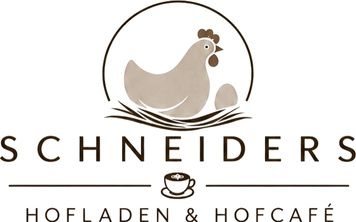
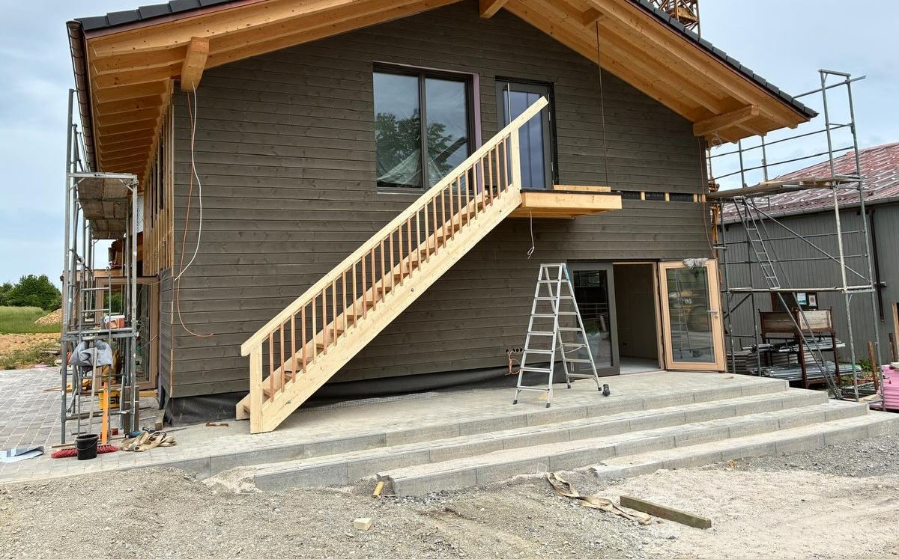
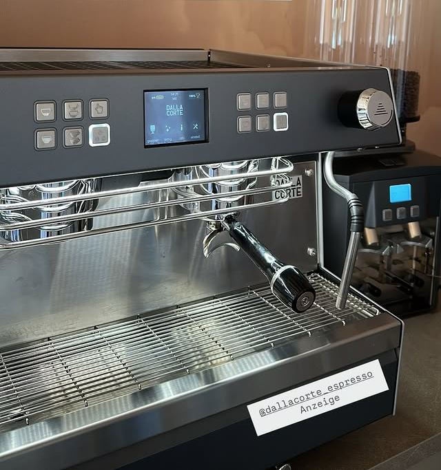
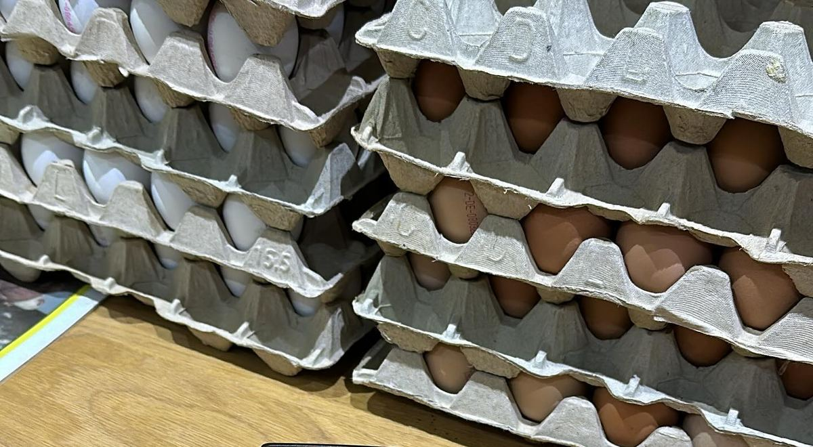
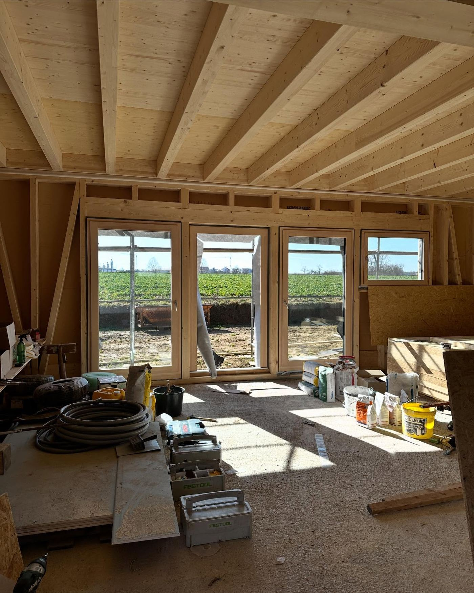
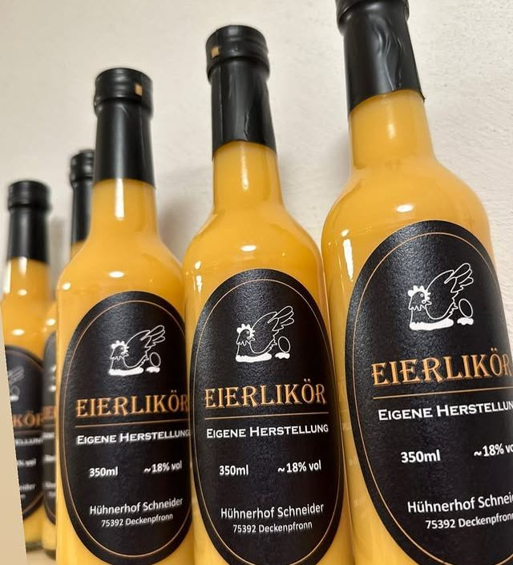
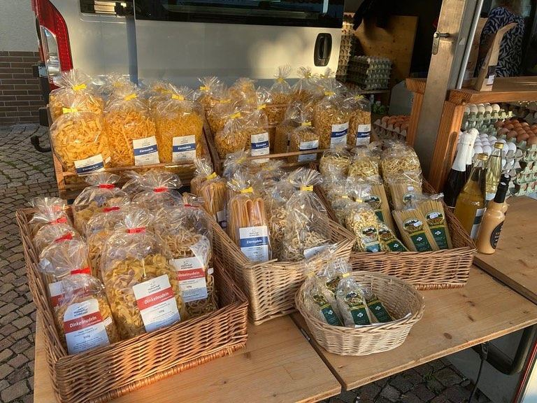
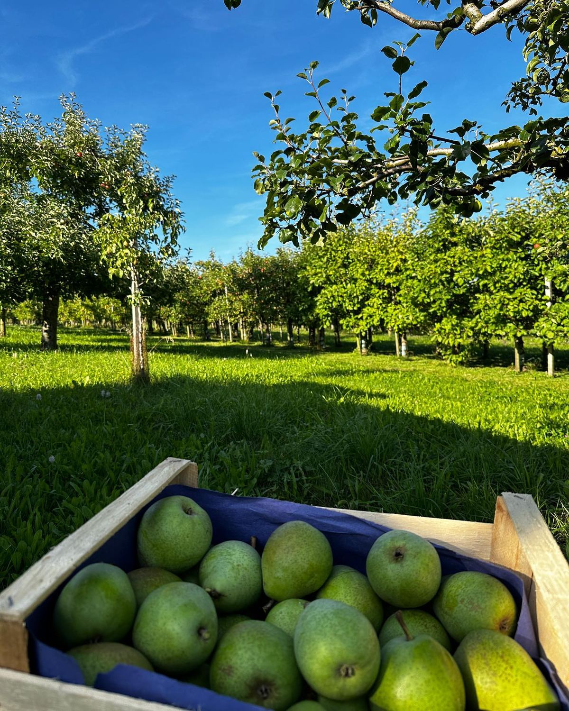

Eröffnung
Samstag, 7. November 2026
von 10 – 17 UhrWir freuen uns auf euch!
Noch – Tage. Mahden 1, Deckenpfronn

Special
am Eröffnungstag
Aperol Spritz
5 €
Spiegeleibrot
Direkt von unserem Legehennenbetrieb – frische Eier und regionale Produkte.
Öffnungszeiten
ab 9. November
| Mo, Di, Do, Fr | 9 – 12 & 14.30 – 17.30 Uhr |
| Mittwoch | Ruhetag |
| Samstag | 9 – 12 Uhr |
Schneiders Hofladen & Hofcafé, Mahden 1, 75392 Deckenpfronn – direkt bei uns am Hühnerhof.
Anfahrt
Hofladen & Hofcafé
Gute Lebensmittel einkaufen und dabei einen Kaffee mit uns trinken.





Was ihr von uns kennt
Familienbetrieb in dritter Generation: Unsere Hennen legen jeden Tag frische Eier. Dazu kommen Produkte von uns und aus der Region. So sah unser Sortiment bisher im Hofbus und auf den Märkten aus:
- Eier
- Eierlikör
- Nudeln und Linsen
- Äpfel und Birnen
- Obst und Gemüse
- Wurst, Fleisch und Käse
- Honig und Marmelade
- Brot, Mehl, Wein und Eis
Außerdem
Ihr findet uns auch mit dem Hofbus und auf den Wochenmärkten.
Rund um die Uhr: unser SB-Lädle in der Calwer Straße 27/1. S'Lädle isch immer offa.
Kontakt & Anfahrt
Hofladen & Hofcafé
Mahden 1
75392 Deckenpfronn
SB-Lädle
Calwer Straße 27/1
75392 Deckenpfronn
Wir freuen uns auf euch!